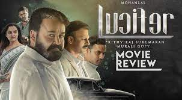
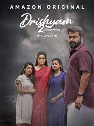

Home
#Home is about the humble,technology challenged Oliver twist struggles to keep his closeness with his sons
and communicate as they grow up and become active on social media
Release date:19 August 2021
Director:Rojin Thomas
Cast: Indrans,Sreenath Bhasi
Language: Malayalam
Rating IMDb:9.1/10

Lucifier
A political Godfather , who ruled the God's own Country,dies and a lot of thieves dressed up as politicians
took
over the rule. When question arises on the replacement of the 'God'.just one name emerges;'stephen
Nedumbally'.
Release date:28 March 2019
Director:Prithviraj Sukumaran
Cast:Mohanlal,Manju Warrier
Language:Malayalam
Rating IMDb:7.5/10

Drishyam 2
Georgekutty,a cinema hall owner,thrives in life but is a changed man.However,When his family gets entangled
in a criminal investigation,he must protect them from the legal institution yet again
Release date:19 February 2021
Director: Jeethu Joseph
Cast:Mohanlal,Meena,Siddique
Language: Malayalam
Rating IMDb:8.6/10
Cold Case
When a skull is founded in a discarded package,ACP Sathyajith is tasked with identifying the victim and
finding the killer.Parallely,a journalist is haunted by a spirit and investigates it.
Release date:30 june 2021
Director:Tanu Balak
Cast:Prithiviraj sukumaran , Lakshmipriya Chandramouli
Language:Malayalam
Rating IMDb:6.1/10
The Priest
Father Carmen,a priest,joins hands with the police to investigate a series of mysterious
suicides.However,he soon stumbles upon a distributing fact that has serious consequences.
Release date:11 March 2021
Director: Jofin T.Chacko
Cast:Mammotty,Nikhila Vimal,Manju Warrier
Language:Malayalam
Rating IMDb:6.5/10